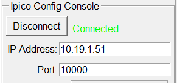

In order to use the Ipico timing system, the computer must be on the same network as the timing system (usually via a hard wired Ethernet connection). The default IP Address and Port of the Ipico can be changed. Once connected and the timing system powered on, simply press the Connect button. If successful, the state will change from:
to:
